Dennis Agerblad Live til Mermaid Pride, Rådhuspladsen, Copenhagen. |
 |
 |
"Røvhul røvhul gi' den gas. På den store Røvhulsplads"
akkompagneret af Anders Juhl Nielsen på trumpet.
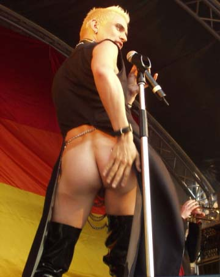
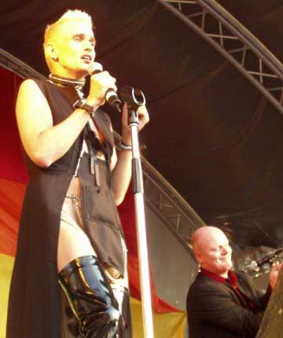
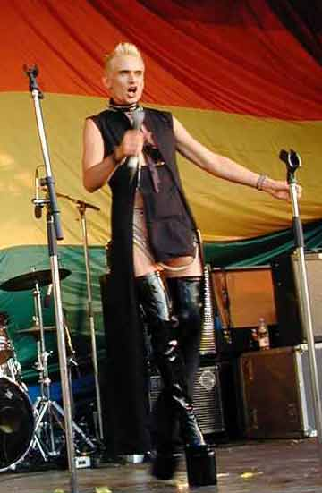
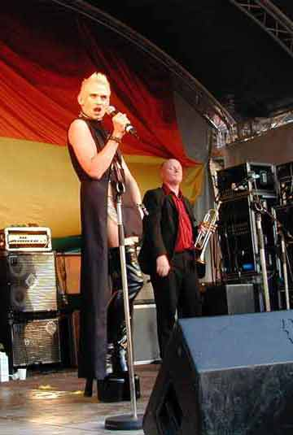
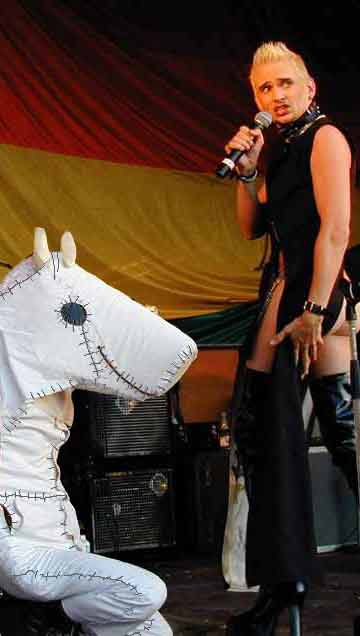
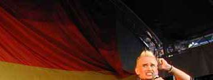 |
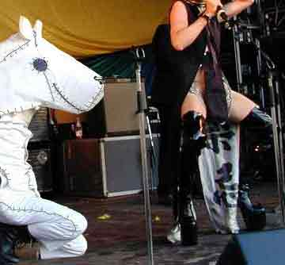 |
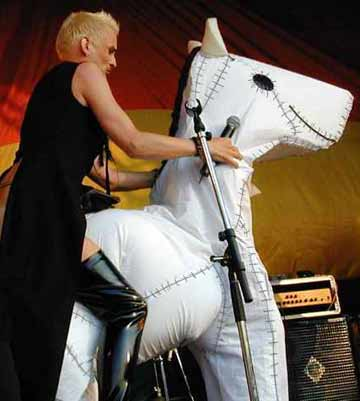
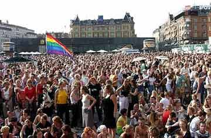
Dennis Agerblad sang i dunst show på Rådhuspladsen
for 30.000 mennesker med sangen Røvhulspladsen.
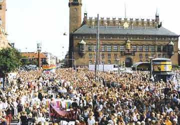

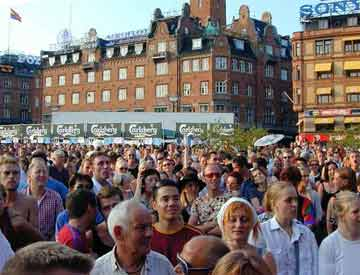
Photos: Hunter Desportes.